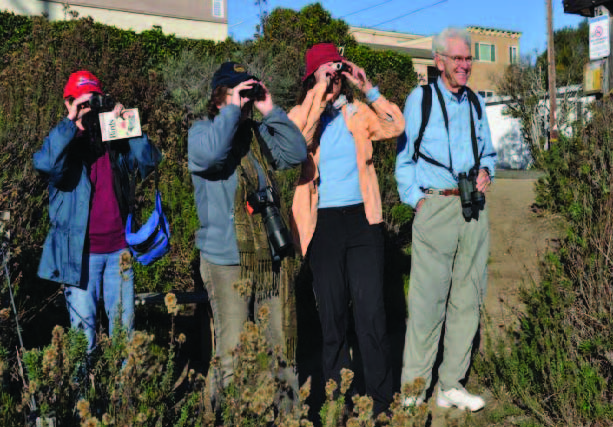
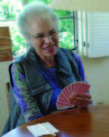
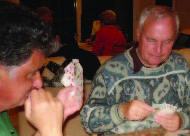
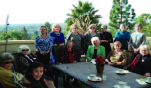
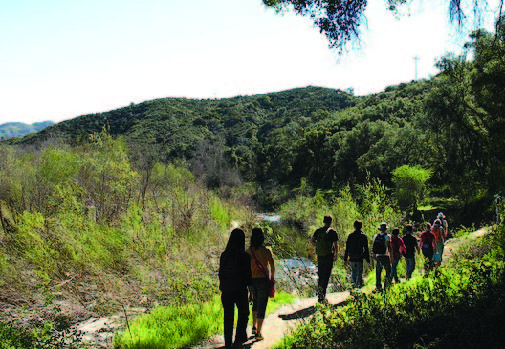
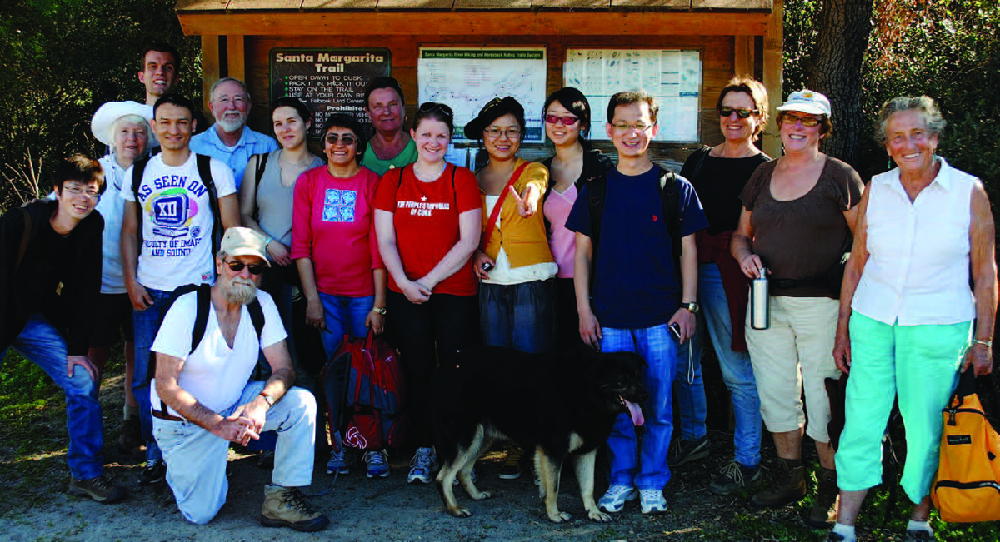

Highlights from Our Interest Groups
Avi Set Birders

We are the
Avi Set, and since avis is the latin word for bird, not surprisingly
we watch, observe, and look at birds.
The great thing is that all you need is a pair of binoculars, and
a willingness to get up a little early to see the beautiful birds that
we share our planet with, going about their lives. We have an
extraordinary diversity of birds in
If you are
interested in joining us please contact Liz Winant,
lwinant@ucsd.edu .
Bridge, Day and Evening


BRIDGE-BRIDGE-BRIDGE-BRIDGE
Cafe
Français

We are more than twenty in the group. We are
all Americans but have different backgrounds and come originally from
different countries. We have members from France, Germany, Switzerland,
Iran, Italy, Mexico, Greece and Turkey. What we all have in common is:
we love speaking French.
We gather once a month, on the second
Wednesdays at 12:00 pm to 2:00 pm from October to May. he hostess
offers some food and refreshments; sometimes we have co-hostesses.
We talk about everything other than politics. Everybody has a chance to say something for a couple of minutes. Then we eat and gossip (not really) and enjoy being together.
If you want to be one of us, please come and join these active
international ladies.
The photo was taken at the last meeting of the season in May at Klelia
Mouzaki’s home. Fiona Levin
was the co-host; both joined us this year. We were fourteen at this
meeting and you can see our longest-time member Lucie Walther and the
last but not least member Paulette Bohrer together. We are open for new
members, and are waiting for you, your friends or family members to join
us. I wish you all a very good summer.
Jusque Octobre.
Please contact Hulya Saygin,
hulyasaygin@yahoo.com
if you’re
interested.
Hiking In and Around San Diego County

Hiking Adventures
Have you ever woken up on a Saturday morning,
thinking that you should really do more in the way of physical exercise?
And then wondered what to do about it?
Walking the same streets every morning can be so boring, but
where to go? And then you
turned around and went back to sleep?
I have a
suggestion: How about
joining our interest group “Hiking in and around
I recommend
Jerry Schad’s Hiking Guide which will give you many extras such as best
time of year for certain hikes, degree of strenuousness, length of hike
and much more. Recently we
have had an influx of many foreign students and scholars and it is very
interesting to chat with them as we hike.
But we keep to our standard 5-7 miles, even if they could go
further.
For more information, please contact,
Rosie/Roswitha Enright,
renright@ucsd.edu

Gracious Aging
The
Oceanids
Gracious Aging
group for folks over
What do we do? Last month we played hooky and
Sometimes we have poems or photos to share, and it
We
are a friendly and welcoming group and with
German Kaffeeklatsch
This is for Oceanids and their spouses who want to refresh their German
language skills. Our members have usually spent some time in Germany, as
students or professionals and like to practice a bit. Our group is small
and everyone is encouraged to speak but just listening is also allowed!
We meet once a month on the third Tuesday at 3pm, have some coffee or
water or juice and some cookies and tell each other whatever comes to
mind until about 4:30. We usually meet at my house in La Jolla. If you
are interested please email me at
renright@ucsd.edu.
Cinema Soiree
Do you enjoy movies and do you like talking about them? Come and join
our Cinema Soirée evening. We meet once a month, always on the second
Sunday of each month all year long and discuss a chosen movie. Every
group member sees the movie at his/her own time. We meet at a member’s
home and listen to an introduction by the person who has chosen the
movie to be discussed. You will receive an email in plenty of time which
tells you which movie to see and where the meeting is going to be held.
Another member has provided snacks and drinks (wine, beer, water) and we
generally have a good time. The meeting starts at 7 pm and the
discussion at 7:30. We are usually done by 9 pm. Come join us, it is
very enjoyable. For more information
mailto:renright@ucsd.edu.